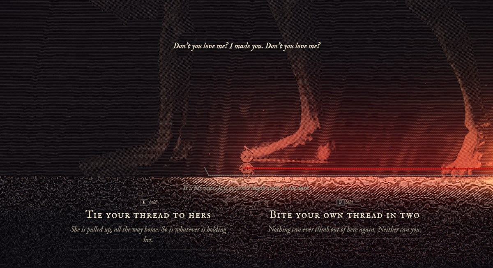
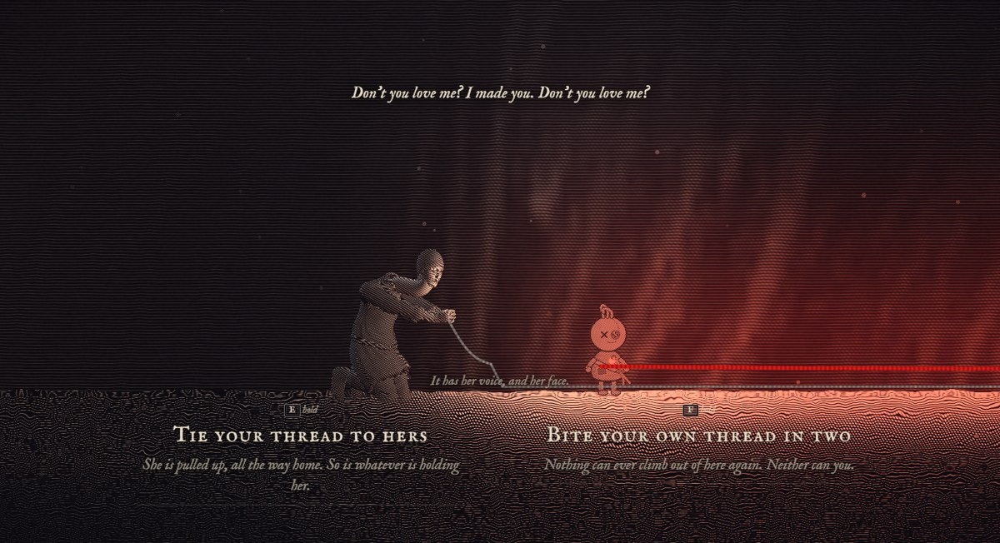
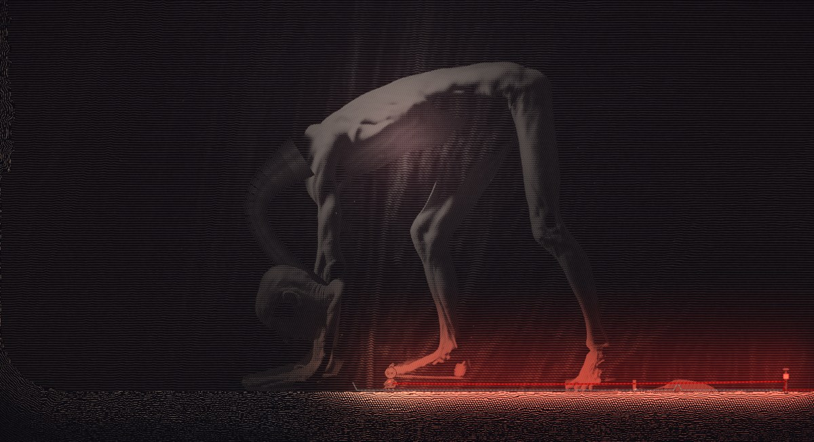
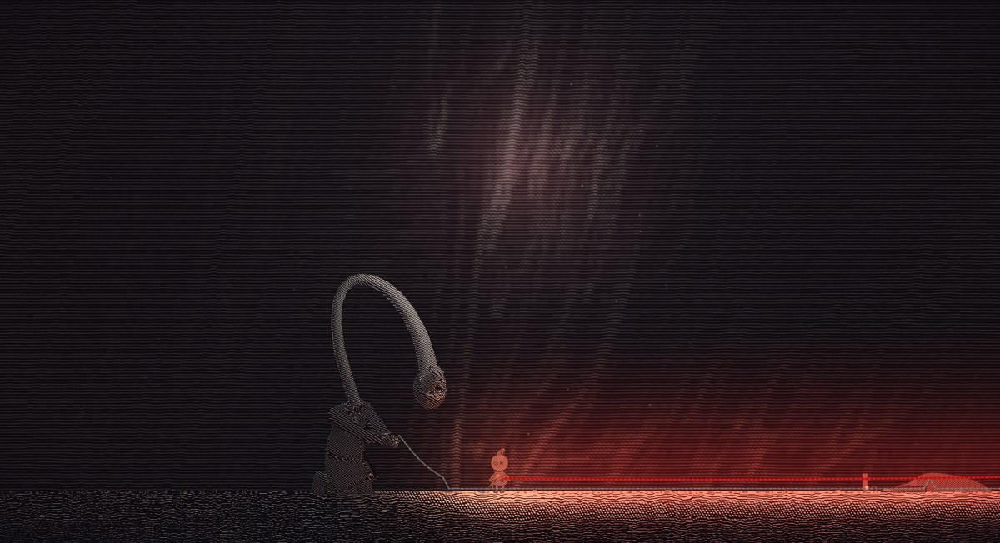
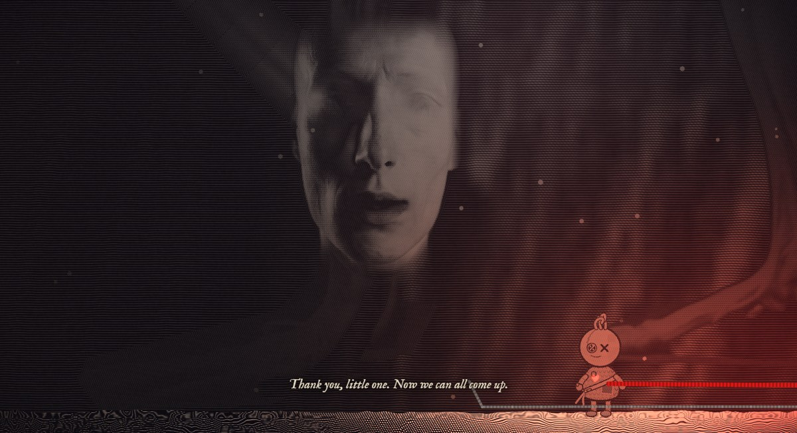
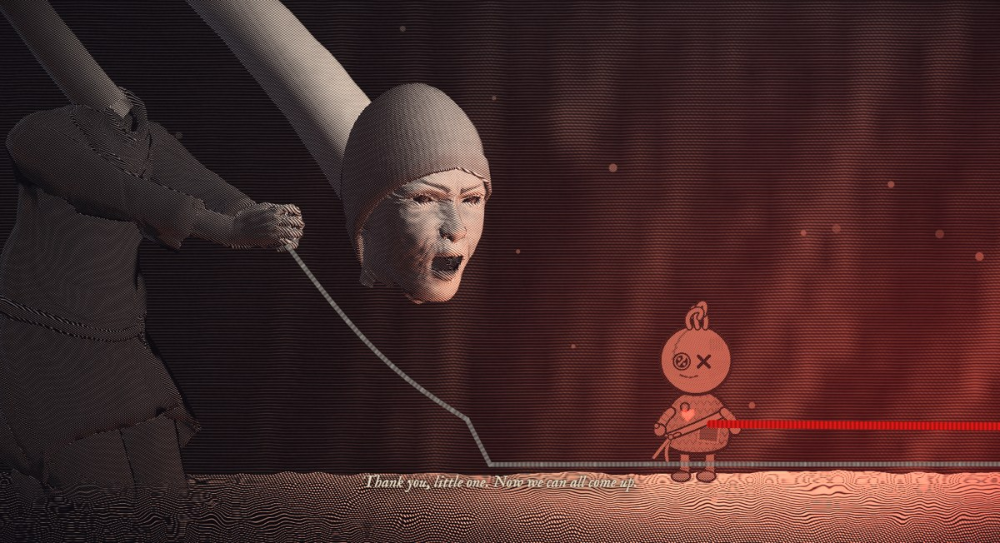
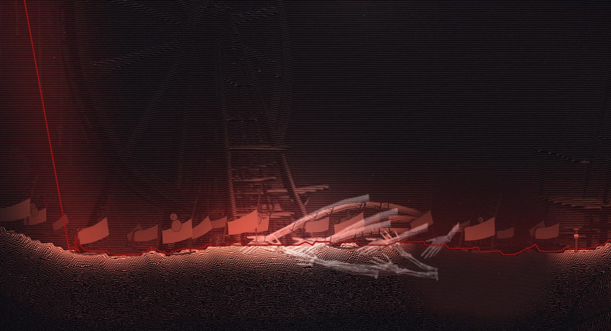
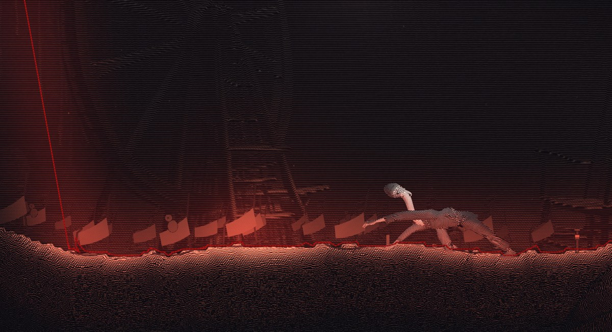
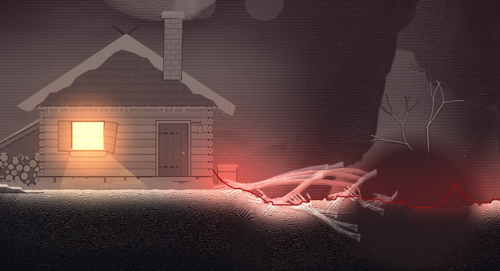
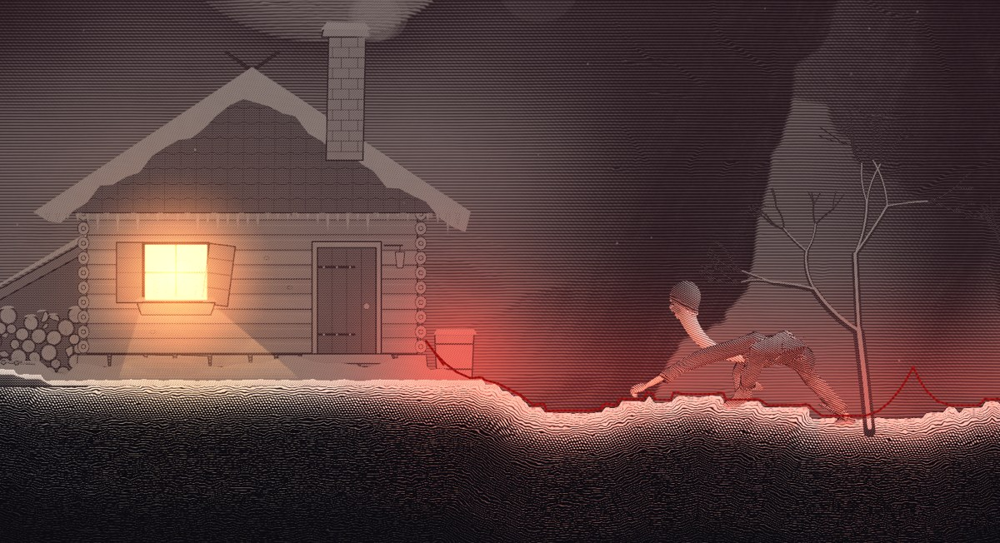

She is holding outthe end of her thread
You can now not hide how the ending looks, make me a proper artifact
Both endings, scene by scene, recorded from the game as it is now. The monster is a 3D figure with a skeleton, posed and lit inside the game. The clips have the game’s sound and one loud moment; the subtitles and the choice itself are not in the recordings, so the lines are written out here.
Before the top, in the rising dark, it comes up the far wall after you: three quick steps, then still, with its head turned right round to look. The clip is set up by hand so that it stays in view; in play you are climbing away from it.
“There you are. Oh, little one, you came all this way. I’m so cold. Tie your thread to mine, and pull me up. Please. Please.”
The candle, and what is left of the real knitter under her shawl. Past the light, the knitter kneels with the end of the grey thread held out in both hands. It has her voice and her face.
It is the monster. The longer you stay, the nearer she leans, on a neck that is never quite the length it was. You hold one key to tie your thread to hers, or another to bite your own in two.


BeforeAfterDrag the thread to compare
“Thank you, little one. Now we can all come up.”
The candle goes out. For a few seconds there is nothing but the doll and the red thread, and in the dark she grows.
Then a light from nowhere shows her still kneeling, still holding the thread, and a neck that goes up out of sight. The head comes down over the doll a joint at a time, the wrong way up, and turns over when it gets there. It thanks you. One second in which nothing happens. Then it calls.


BeforeAfterDrag the thread to compare


BeforeAfterDrag the thread to compare
Five places you came through, each seen from a camera that does not move: the Hall of Chairs, the Ink Mere, the Bell Gallery, the Throat, home. The thread lies there. Then it comes along it hand over hand, and every light it passes goes out.
Each hand and foot takes one place on the thread and holds it while the rest goes by. The arms stretch as far as they must. Once in every place it looks out at you. At the cottage it stops, raises its head, and the window goes dark. The film follows, and that has not changed.


BeforeAfterDrag the thread to compare


BeforeAfterDrag the thread to compare
“What have you done?”
The red goes out of the thread, from her teeth upward. It asks what you have done, twice, the second time not in her voice. It leans in, and breathes the candle out.
“Little one? That isn’t a name. What is your name?”
Hands on the floor, looking for her. Then half a second of light and no sound: the face beside the doll. It is only listening. The clip is black until then, and black after.
why when I get asked to either bite the thread or tie it there is this weird picture of human climbing? Shouldn't it be our knitter aka the monster pretending to be the knitter? And why when it climbs out it is just a pale gradient with a bunch of hands?
Do you think you can make it better if I give you some 3d model so that you don't have to manipulate images?
Yes. This one is younger in close-up than the voice is, and her knitted cap looks modern. Best would be to keep the knitter for the pretending and have a second model for what comes out of her.
| What | Why |
|---|---|
| Rigged: FBX, GLB or .blend | Arms, legs, spine, neck and head at least. Fingers and a jaw that opens matter most here. |
| Up to about 60,000 triangles | It is drawn live. The present one is 25,000 and the game stays at 60 frames a second. |
| A colour texture, and a normal map if there is one | Only its light and dark is used. Wrinkles, veins and ribs show well in the engraving. |
| Animations: not needed | The movement is made in the game, so it can hold the thread and fit the rock. |
| A licence that allows use in a game | The repository is public, so model files stay out of it and only go into the built game. |
Still pictures left in the game: the hands in the Hush, the people on the Loom’s floor, and the arms in the rising dark. One model of a person would do for the last two.
app/src/ending.jsThe scenes and their timing.app/src/figure.jsSkeleton, limbs, the neck, and the poses.app/src/stage.jsWhich figure is where and doing what.app/src/renderer.js · shaders.jsThe figure pass and its engraving.scripts/figures/export.pyA rigged model in, the game’s format out.